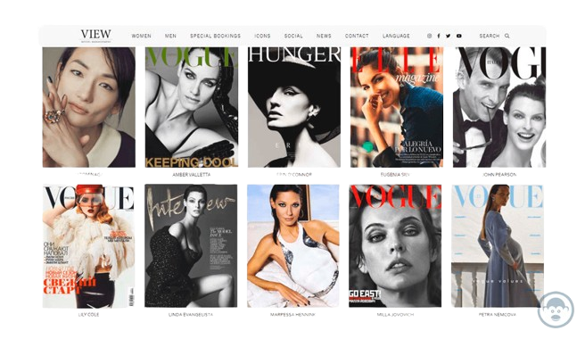

Tipos de modelaje

Los tipos de el modelaje son una parte fundamental del proceso de creación de ropa e implican la creación de patrones o moldes que sirven como base para la producción de prendas de vestir, hay varios tipos de el modelaje de moda que se pueden utilizar en la confección de ropa, y cada uno de ellos tiene sus propias técnicas y aplicaciones.Estos son los principales tipos de el modelaje de moda:
- Modelaje de moda femenina y masculina
- Modelaje de moda infantil
- Modelaje de calzado y accesorios
- Modelaje de moda para mascotas
- Modelaje de productos